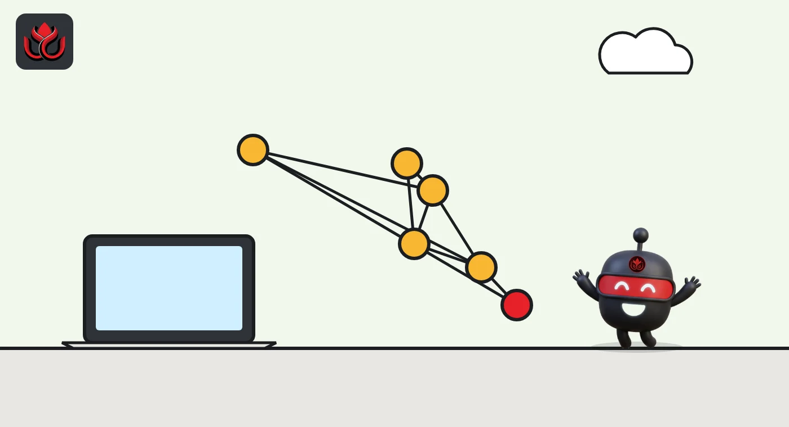
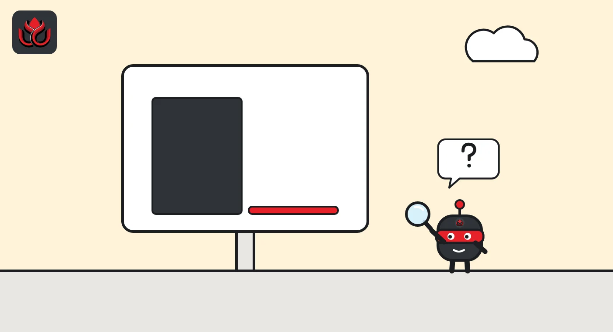

Polygon claims 11 million payments per second. Almost none of them touch the chain
Polygon Labs says its new agent pay channels processed more than 11 million payment updates per second in tests. The number is real, but it measures offchain hubs on a devnet, not Polygon's blockchain.
Key points
- Polygon Labs said on September 24, 2026, that a fleet of 25 hubs processed more than 11 million verified payment updates per second in its tests.
- Payments run through offchain channels and settle on Polygon in batches. The test used a live devnet with a stand-in inference provider.
- Polygon says a June upgrade lifted the chain itself to only up to 5,000 payments per second.
What happened
Polygon Labs announced agent pay channels on September 24, 2026, a payment system built for AI agents that buy services in tiny pieces: a block of tokens from a language model, a single data lookup, one API call. In its tests, a fleet of 25 hubs handled more than 11 million verified payment updates per second.
Polygon pitches this at a world where software pays as it works. Its example: an agent finishing one task might buy inference from several providers, data from another and a tool from a third, making hundreds of purchases before it is done.
Read the headline figure carefully. These are payment updates handled by offchain servers, not transactions on Polygon's blockchain.
How the channels work
The design is a payment channel. A payer locks funds in a contract on Polygon once. After that, the agent sends signed vouchers to a hub as it uses a service. Each voucher states the running total owed. The hub checks the signature, price, a replay ID, the spending ceiling and the remaining deposit, then returns a receipt. The provider releases the next unit of work.
Settlement happens later. The hub batches the accumulated balances and posts a single Merkle root, a compact fingerprint of all the balances, to Polygon. Providers prove what they earned against that root and claim it. Participants choose how often to settle: Polygon gives examples from one payment to 100 million.
Requests for payment use x402, a standard that lets a web service quote a price over HTTP. Polygon says x402 handles the request and the channel handles high-frequency updates and batched settlement.

The three test results
Polygon published three results. With the full x402 flow in the loop (agent, website, facilitator and hub), it reached about 2.5 million payments per second with 100% success. A single 24-core server talking directly to the engine handled 533,000 to 536,000 verified payments per second. The 25-hub fleet, each hub with 16 virtual CPUs, passed 11 million.
Each update was confirmed in 20 microseconds at the engine level, plus network delay. Hubs do not coordinate with each other, so Polygon says capacity grows in a straight line as hubs are added and a bigger fleet could pass 100 million updates per second. In the benchmark setup, one billion updates cost about $0.15 to process.
The test ran on a live devnet against an OpenRouter-style API. Polygon states the payment path was real while the inference provider was a stand-in.
Polygon agent pay channel test results
million payment updates per second
Devnet benchmarks reported by Polygon Labs. Source: Polygon blog
What Polygon's chain itself handles
Polygon's own figures show the gap. In a September 29 post, it said a June upgrade raised the chain to up to 5,000 payments per second, and July's Ithaca upgrade added automatic recovery when a block producer stalls. The same post says Polygon has carried more than $3 trillion in stablecoin transfers since September 2020, including $933 billion in 2025 (up from $276 billion in 2024) and $741 billion so far in 2026. It also says the community completed a 100 million POL burn from collected base fees in September.
Real payment firms already use the chain. Polygon says Revolut moved $810 million on it in 2025, PayPal USD began issuing natively on Polygon this summer, and Mastercard picked it as one of the networks for settlement outside banking hours.
So the 11 million figure is roughly 2,200 times the chain's stated capacity. That is only possible because the channels keep individual payments off the chain and use Polygon as a settlement and custody layer.

Who carries the risk
Polygon says the deposited funds and final settlement stay anchored on Polygon. Between settlements, though, the hub is the party checking vouchers and building the batch. Polygon's post does not detail what happens if a hub goes offline or posts a wrong root, or how disputes are handled. Those details will decide how much trust users place in hub operators.
The channels are not self-serve yet. The post invites interested teams to contact Polygon's sales team and says the system will soon connect to the Polygon Open Money Stack (OMS), its payments platform.
Part of that stack is already live for agents. On October 21, Polygon introduced agent spend controls in OMS. A team gives an agent a scoped permission on an existing wallet, with a spending limit, a list of approved payment actions and an expiry date. The wallet rejects any request outside those terms, and the team can switch the rule off. That product deals with how much an agent may spend. The September 24 benchmark deals with how fast it can pay.
LC Insight analysis
This section is our reading of the facts above, not a statement of fact.
- We think the benchmark is honest about what it measures, and the headline is not. Comparing 11 million offchain updates to card networks or other chains mixes two different things: chain throughput and channel throughput.
- Payment channels suit machine-to-machine micropayments, where waiting for each onchain transaction makes no sense. The open question is who runs the hubs and what users can do if one misbehaves. Pairing channels with the spend limits Polygon shipped in October would answer part of the safety question.
- The likely near-term test is real traffic. A devnet with a stand-in provider proves the engine is fast; a live deployment with paying customers would show whether agents actually buy services this way.
What's next
- A public specification for hub failure and dispute handling
- The first production deployment with a real inference or data provider
- Integration with Polygon Open Money Stack
- Whether other chains publish comparable channel benchmarks
Disclaimer. This article is based on public information and the sources listed below as of the update time shown. It is for information only and is not investment, legal or tax advice. Figures may change as companies and authorities publish new data.